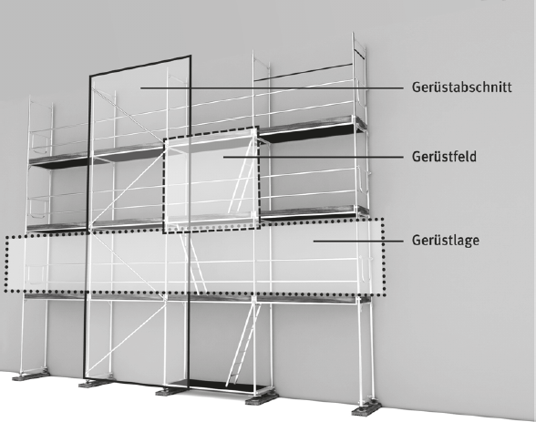

2.1 Gerüste sind vorübergehend errichtete Baukonstruktionen veränderlicher Länge, Breite und Höhe, die an der Verwendungsstelle aus Gerüstbauteilen zusammengesetzt, ihrer Bestimmung entsprechend verwendet und wieder auseinander genommen werden können.
Die Verwendung von Gerüsten im Sinne dieser Regel schließt den Auf-, Um- und Abbau (Montage) eines Gerüstes durch den Gerüstersteller und den Gebrauch des Gerüstes durch den Gerüstnutzer ein.
2.1.1 Arbeitsgerüste sind Gerüste, von denen aus Arbeiten durchgeführt werden können. Sie haben außer den Beschäftigten und ihren Werkzeugen auch das jeweils für die Arbeiten erforderliche Material zu tragen. Leistungsanforderungen sowie die Verfahren für Entwurf, Konstruktion und Bemessung von Arbeitsgerüsten können DIN EN 12811-1: 2004-03 entnommen werden.
Zu den Arbeitsgerüsten gehören auch
2.1.2 Schutzgerüste sind Gerüste, die als Fang- oder Dachfanggerüste Beschäftigte gegen tieferen Absturz oder als Schutzdächer Beschäftigte, Maschinen, Geräte und anderes vor herabfallenden Gegenständen schützen.
Die Leistungsanforderungen sowie die Verfahren für Entwurf, Konstruktion und Bemessung von Schutzgerüsten können z. B. DIN 4420-1:2004-03 entnommen werden.
2.1.3 Gerüstbauarten sind z. B. Fassadengerüste, Raumgerüste, Hängegerüste.
2.1.3.1 Fassadengerüste sind Gerüste mit längenorientierten Gerüstlagen, die als Standgerüste unmittelbar auf dem Untergrund stehen und in der Regel außen oder innen an Fassaden aufgestellt werden.
2.1.3.2 Raumgerüste sind Arbeitsgerüste mit flächenorientierten Gerüstlagen, die als Standgerüste unmittelbar auf dem Untergrund stehen.
2.1.3.3 Hängegerüste sind Arbeitsgerüste mit längen- oder flächenorientierten Gerüstlagen, die an Bauteilen oder Konstruktionen aufgehängt sind.
2.1.4 Fahrbare Gerüste sind Arbeitsgerüste mit längen- oder flächenorientierten Gerüstlagen, die aus Stahlrohren, Kupplungen, Systembauteilen und Fahrrollen bestehen und verfahren werden können.
2.2 Allgemein anerkannte Regelausführung ist eine Gerüstkonfiguration, für die der Gerüsthersteller einen Standsicherheitsnachweis erbracht hat und eine allgemeine Aufbau- und Verwendungsanleitung erstellt wurde.
2.3 Allgemeine Aufbau- und Verwendungsanleitung ist die Gebrauchs- und Bedienungsanleitung, die der Gerüsthersteller z. B. auf Grundlage des Produktsicherheitsgesetzes (ProdSG) sowie der DIN EN 12810:2004-03, DIN EN 12811:2004-03 und DIN 4420:2004-03 erstellt.

Abb. 1 Bezeichnungen am Beispiel eines Fassadengerüsts (siehe 2.4–2.6)
2.4 Gerüstfeld ist begrenzt durch vier Ständer oder zwei Rahmen sowie Seitenschutz und dazugehörige Belagfläche.
2.5 Gerüstabschnitt ist ein für sich standsicherer Abschnitt eines Gerüstes mit einem oder mehreren übereinander stehenden Gerüstfeldern.
2.6 Gerüstlage besteht aus den zusammenhängenden Gerüstfeldern einer horizontalen Ebene.
2.7 Gerüstersteller ist ein Arbeitgeber, dessen Beschäftigte Gerüste auf-, um- oder abbauen.
2.8 Gerüstnutzer ist ein Arbeitgeber, dessen Beschäftigte Gerüste gebrauchen.
2.9 Qualifizierte Person ist eine Person, die ein Gerüstnutzer mit bestimmten Aufgaben gemäß dieser TRBS betraut und dafür qualifiziert ist. Dazu können z. B. Personen gehören, die eine abgeschlossene Berufsausbildung im Bau- und/oder Montagegewerk haben oder die durch eine zeitnah ausgeübte berufsnahe Tätigkeit und entsprechende Unterweisung über die erforderlichen Fachkenntnisse verfügen.